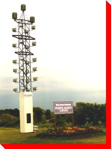

LARGE CANADIAN ROADSIDE ATTRACTIONS

World's Largest/Tallest Purple Martin Colony
Neepawa, Manitoba
Credit:
Gerry Fox
Return to Manitoba Page
Return to Trans-Canada Highway Page
Main
|
What's New
|
By Location
|
Alphabetical Listing
|
By Type
Wanted Photos List
|
Links
|
Awards
|
Webrings
Copyright © 1999 - 2006 Ed Solonyka